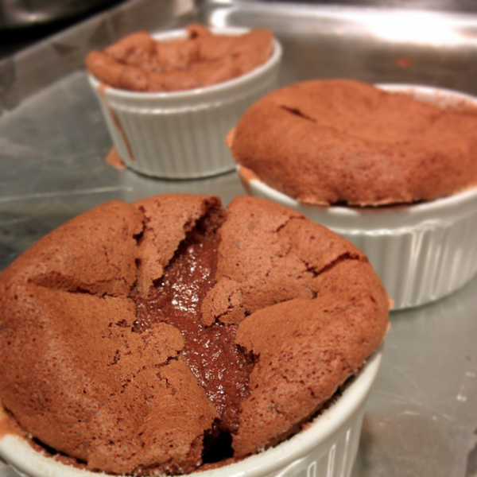

Chocolate Soufflé
Makes 8 servings.
Ingredients
- Unsalted butter at room temperature to grease the ramekins
- Sugar to coat the greased ramekins
- 6 ounces of semisweet chocolate pieces
- 6 large eggs
- 2/3 cup of sugar
- Half a teaspoon of kosher salt
- 2 tablespoons of whole milk (or heavy cream)
- 1 teaspoon of pure vanilla extract
Recipe
Preheat the oven to 350 degrees Fahrenheit. Butter the inner surfaces each ramekin. Sprinkle the inside of each ramekin evenly with sugar. Set the ramekins on a baking sheet.
Place chocolate in a bowl over a pot of simmering water. It may help to add a tablespoon of butter to the chocolate pieces. Heat over medium heat until the chocolate melts.
Separate the egg yolks into a stand mixer bowl and egg whites into a large mixing bowl. Add the salt and half a cup of the sugar to the egg yolks. Beat egg yolks on medium-high speed until light and fluffy (about 3-4 minutes). It should take 3 seconds for peaks to dissolve when lifted. Stir vanilla and milk into the melted chocolate and transfer to a large mixing bowl. Fold in 1/3 of the egg yolk mixture into the chocolate mixture and repeat twice. Using a stand mixer with a wire attachment, beat the egg whites on medium speed until fluffy, for about 3-4 minutes. Add remaining 1 tablespoon of sugar to egg whites. Beat egg whites for 1 more minute on medium speed until shiny. It should form peaks when lifted. Fold egg whites into chocolate mixture.
Divide mixture evenly among prepared ramekins. You can refrigerate for a few hours if you want to bake later. If you refrigerated, bake for 20-25 minutes. Else, bake for 15-17 minutes, or until soufflés are puffed and cracked on top. Serve immediately.
Main